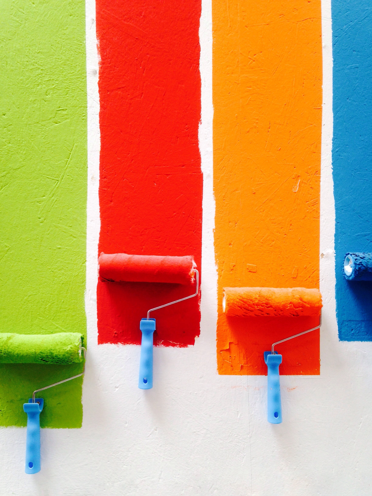

İç Cephe Boya

İç Cephe Boya
İç cephe boyamaya başlamadan önce yüzeyin hazırlanması en önemli kuraldır. İç cephe boyalarında boyama yapacağınız yüzeyin temiz, kuru ve sağlam olması büyük önem taşır ve boyamanın başarısını artırır. Böylelikle kullanacağınız iç cephe boyası daha uzun süre dayanacak, yüzeydeki kusurlar görünmeyecektir. Bazen binaların kendi yapılarından kaynaklanan nem sorununu da baştan çözmeniz gerekmektedir.Duvar türlerine göre de yüzey hazırlığını farklı gerçekleştirmeniz gerekir. Gerekli tamiratlar mutlaka yapılmalıdır. Ahşap duvar, yeni duvar, metal vb. yüzeyler öncelikle çok iyi temizlenmeli böylece boya üzerine kirlerin geçmemesi sağlanmalıdır.